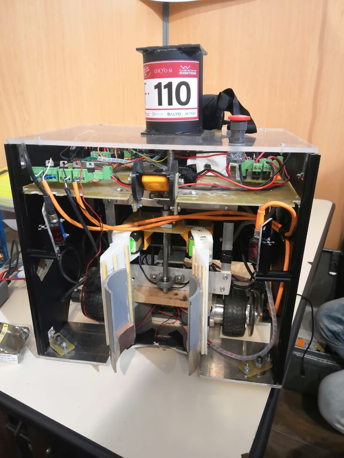
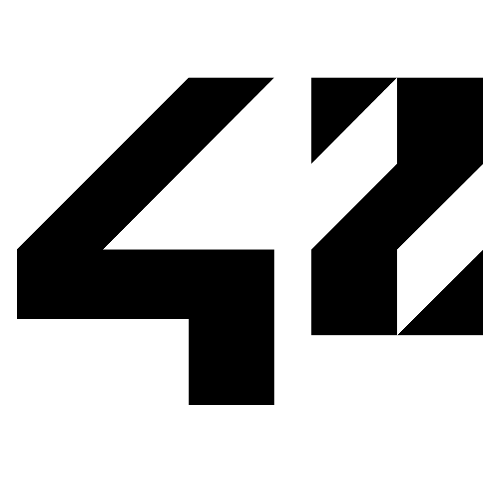
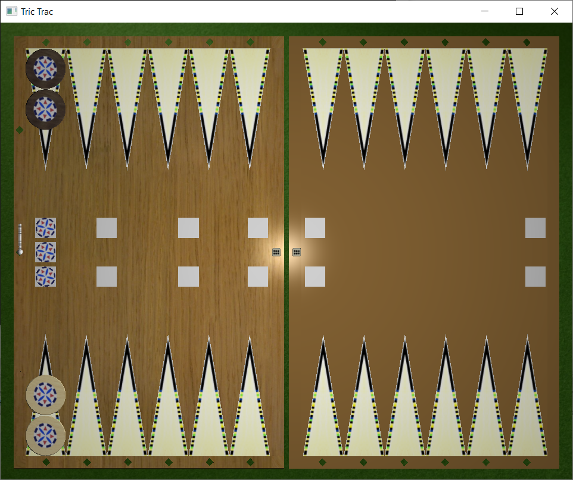

A propos de moi
Je suis un étudiant en dernière année d'école d'ingénieure à l'ISEP. Je suis également étudiant à l'école 42 en parallèle.
Ce site contient un receuil et une description des principaux projets que j'ai pu réaliser sur mon temps libre ou durant ma scolarité.
Mes projets
Moteur de Jeu 3D
Ce project est un moteur de jeu 3D développé en C++ avec OpenGL, contenant notamment un moteur physique pour des solides convexes.
Il utilise le design pattern ECS et support quelques effets comme le render to texture et les ombres. Il permet d'avoir des skeletal animations et des heightmaps.
Framework Javascript
Développé à deux, ce projet est un framework javascript front-end (type angular) permettant de créer des applications webs single-page en proposant une architecure MVC coté client. Il a été utilisé pour développer un site de domotique dans le cadre d'un projet d'école;
Voiture Autonome
Pour ce projet de voiture autonome, j'ai voulu créer ma propre bibliothèque d'entrainement de réseau de neurones en C++. Pour accélerer les entrainements, elle effectue toutes les opérations matéhmatiques avec OpenCL en backend.
J'ai l'ai ensuite utilisée pour entrainer un réseau de neurone convolutif travaillant sur des images prises par une caméra virtuelle dans un jeu (dans mon moteur 3D)
Coupe de France de Robotique
J'ai été vice-président de l'association de robotique de l'ISEP (l'AIR) pour l'édition de la coupe de robotique 2019.
J'étais en charge des développements technique, des formations et de l'animation de l'équipe technique.
Nous avons créé un robot autonome autonome de A à Z en suivant les contraintes imposées par le cahier des charges de la compétition.
Nous avons du mettre au point une stratégie, dessiner les plans du robot, le construire puis assembler l'éléctronique et programmer l'algorithme de pilotage embarqué.

Formation sur les réseaux de neurones
C'est une formation que j'ai préparée puis donnée pour les étudiants de l'ISEP dans le cadre de l'association GarageISEP.
Formation sur les réseaux de neurones feed forwards et l'apprentissage supervisé.
Cette vidéo compte aujourd'hui plus de 11000 vues !
Shell
J'ai réalisé de shell dans le cadre de ma formation à l'école 42.
C'est un projet de fin de branche que nous avons fait à 4.
C'est un shell UNIX écrit en C pure, sans aucune bibliothèque externe. Il supporte l'édition de ligne, l'autocompletion, le job control et en partie le shell scripting.

Jeu du Tric Trac
Ce projet est une tentative d'implementation multijoueur du jeu du Tric Trac, ancêtre du backgammon, afin de le re-populariser !
C'est aussi une manière de mettre en application mon moteur de jeu 3D et d'en apprendre plus sur le jeu en réseau.
Le jeu n'est pas terminé et le projet n'est plus actif.

Jeu Mario Bros avec IA
Jeu en 2D crée avec la SFML dans le but d'apprendre le C puis le C++.
J'ai plus tard intégré une IA pour permettre à un agent autonome de jouer au jeu grâce à un algorithme génétique appelé NEAT.
Ce projet à été inspiré par la video de SethBling sur ce sujet.